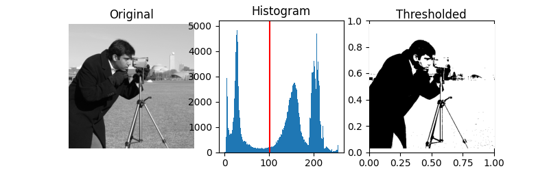

Binarizarea imaginilor prin compararea cu un prag: metoda Otsu
Laboratorul 5, DEPI
1 Obiectiv
Citirea și afișarea imaginilor în tonuri de gri în Matlab, interpretarea histogramelor acestora și implementarea binarizării imaginilor prin căutarea pragului cu metoda Otsu, pe baza varianțelor din interiorul grupurilor.
2 Aspecte teoretice
2.1 O imagine în tonuri de gri este o matrice
O imagine digitală este o matrice dreptunghiulară de pixeli.
O imagine în tonuri de gri (grayscale) are câte o valoare pentru fiecare pixel, valorile fiind aranjate într-o matrice I.
Valorile pixelilor sunt numere între 0 și 1 (de tip double) sau între 0 și 255 (de tip uint8).
- 0 reprezintă negru;
- valoarea maximă (1 sau 255) reprezintă alb;
- valorile intermediare reprezintă nuanțe de gri.
În acest laborator, preferăm valori ale pixelilor în intervalul 0–1, de tip double, care permite calcule precise.
De exemplu, următoarele comenzi creează și afișează o imagine mică în tonuri de gri:
I_small = [0 0.25 0.5 1; 0 0.25 0.5 1; 0 0.25 0.5 1]; % O matrice de 3 pe 4 cu valori între 0 și 1
imshow(I_small)Imaginile pot fi citite dintr-un fișier cu funcția imread(), ca în exemplul de mai jos:
I = imread('coins.png');
% I = rgb2gray(I); % Dacă imaginea este RGB, se convertește la grayscale
I = im2double(I);
imshow(I)Funcții folosite:
imread()citește o imagine dintr-un fișier și returnează matricea pixelilor;rgb2gray()convertește o imagine RGB în grayscale, dacă este necesar;im2double()convertește matricea imaginii la tipuldoubleși îi rescalează valorile în intervalul 0–1.imshow()afișează matricea ca imagine.
Imaginile folosite în acest laborator sunt deja în tonuri de gri, deci nu trebuie convertite din RGB în grayscale.
2.2 Histograma imaginii
Histograma imaginii numără câți pixeli au fiecare valoare, și arată distribuția valoriloe.
Folosiți imhist() pentru a afișa histograma imaginii:
figure
imhist(I)
xlabel('Intensitate')
ylabel('Număr de pixeli')Pentru o imagine în tonuri de gri, imhist(I) folosește implicit 256 de intervale. Folosiți imhist(I,64) pentru a specifica un alt număr de intervale (aici 64).
Pentru a transforma o matrice într-un vector, concatenând toate coloanele, folosiți I(:). Acest lucru este util pentru calculele care nu depind de pozițiile pixelilor:
pixels = I(:);
2.3 Compararea cu un prag și binarizarea imaginilor
Binarizarea unei imagini transformă o imagine în tonuri de gri într-o imagine binară, cu doar două valori (0=negru și 1=alb).
Putem face acest lucru prin compararea cu un prag, adică prin compararea cu o valoare de prag T:
- toți pixelii \leq T devin 0
- toți pixelii > T devin 1
BW = I > 0.5;
figure
imshow(BW)BW are același număr de linii și de coloane ca I. Valorile sale sunt false (= 0, afișat ca negru) și true (=1, afișat ca alb).
2.4 Întrebare: cum alegem pragul T?
Problema este alegerea unui prag bun, care să separe partea mai întunecată a imaginii de partea mai luminoasă, nu prin apreciere vizuală, ci pe baza unui criteriu automat.
2.5 Criteriul Otsu: grupurile trebuie să fie compacte
Metoda Otsu alege un prag care minimizează varianța ponderată a grupurilor.
- pentru i = [1:254]:
- calculați pragul T = i/255 (astfel încât să aibă valori în intervalul 0–1)
- împărțiți pixelii în două grupuri:
- C_0 = pixelii \leq T
- C_1 = pixelii > T
- calculați numărul de pixeli din fiecare grup, N_0 și N_1
- calculați media și varianța fiecărui grup, m_0, m_1, v_0, v_1
- calculați suma ponderată a varianțelor: J = \frac{N_0}{N_0+N_1} v_0 + \frac{N_1}{N_0+N_1} v_1
- salvați scorul J pentru acest prag i într-un vector
scores(i)
- Alegeți pragul care a produs scorul minim din
scores.
În Matlab, pentru a calcula media și varianța unui vector x, folosiți:
m = mean(x);
v = var(x,1); % Folosiți aici normalizarea cu NDacă unul dintre cele două grupuri este gol, nu se poate calcula media sau varianța. Omiteți acel prag și setați scorul său J la Inf (infinit).
2.6 Rezumat: funcții și notații de cunoscut
| Sintaxă sau notație | Exemplu | Descriere |
|---|---|---|
imread(filename) |
I = imread('coins.png') |
Citește o imagine și returnează matricea pixelilor |
rgb2gray(I) |
I = rgb2gray(I) |
Convertește o imagine RGB în tonuri de gri |
im2double(I) |
I = im2double(I) |
Convertește o imagine la tipul double, rescalând valorile din 0–255 în 0–1 |
imshow(I) |
imshow(I) |
Afișează o imagine I |
size(I), numel(I) |
size(I), numel(I) |
Dimensiunile imaginii și numărul total de pixeli |
I(:) |
pixels = I(:) |
Transformă o matrice într-un vector coloană |
imhist(I), imhist(I,n) |
imhist(I,64) |
Afișează histograma imaginii; implicit sunt 256 de intervale pentru imagini în tonuri de gri |
I > T |
BW = I > 0.5 |
Binarizare: pixelii deasupra pragului devin 1, ceilalți 0 |
| Indexare logică | C0 = pixels(pixels <= T) |
Extrage valorile care îndeplinesc o condiție |
numel(x) |
N0 = numel(C0) |
Numără pixelii dintr-un vector |
mean(x) |
m0 = mean(C0) |
Intensitatea medie a unui vector |
var(x,1) |
v0 = var(C0,1) |
Varianța, normalizată cu numărul de pixeli |
Inf(m,n) |
scores = Inf(1,254) |
Inițializează scorurile cu infinit, astfel încât pragurile omise să nu poată fi selectate |
min(x) |
[minScore,index] = min(scores) |
Valoarea minimă dintr-un vector și poziția sa (prima sa apariție) |
3 Exerciții
Scrieți comenzile într-un script sau live script, cu excepția funcției din Exercițiul 2, care se scrie într-un fișier separat.
Citiți, afișați și binarizați o imagine:
Citiți imaginea
coins.pngîn variabilaI, convertiți imaginea la tipuldoubleși la intervalul 0–1 și afișați-o.Afișați histograma imaginii. Care valori corespund fundalului și care monedelor?
Alegeți un prag T examinând imaginea și histograma sa. Creați imaginea binară
BWprin compararea cu pragul T și afișațiBW.Afișați histograma lui
BW. Care sunt cele două valori ale intensității care rămân?
Implementați metoda Otsu ca o funcție, în fișierul
otsuManual.m, după modelul de mai jos.Argumentul de intrare
Ieste o imagine în tonuri de gri, de tipdouble, în intervalul 0–1. Returnați cel mai bun prag găsit cu algoritmul descris mai sus.function [bestThreshold] = otsuManual(I) % Turn the matrix into a vector pixels = ... for i = 1:254 % Compute the threshold T for the current value of i T = ... % Split the pixels into two clusters by thresholding C0 = ... C1 = ... % Count the number of pixels in each cluster N0 = ... N1 = ... % Compute the mean and variance of each cluster m0 = ... m1 = ... v0 = ... v1 = ... % Compute the weighted sum of variances J = ... % Save the score J for this threshold i in a vector scores(i) scores(i) = J; end % Find the threshold that produced the minimum score in scores, % and name it bestThreshold ...Aplicați funcția:
Apelați funcția pentru imaginea normalizată
Idin Exercițiul 1:bestThreshold = otsuManual(I);Care este valoarea lui
bestThreshold?Binarizați imaginea
IcubestThresholdși afișați rezultatul.
Repetați Exercițiul 3 pentru imaginea
Lab5_handwrittenText.png.